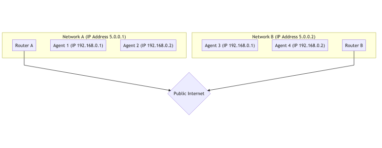
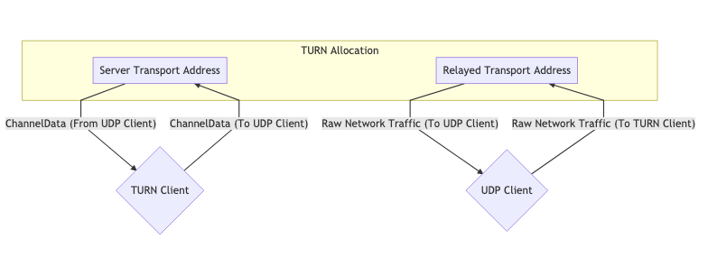

连接
为什么 WebRTC 需要专用的子系统进行连接？
目前，大多数部署的应用程序都通过客户端 / 服务器方式进行连接。客户端 / 服务器方式连接要求服务器具有稳定且公开可用的传输地址。客户端与服务器联系，然后服务器做出响应。
WebRTC 不使用客户端 / 服务器模型，它建立点对点（P2P）连接。 在 P2P 连接中，创建连接的任务被平均分配给两个对等方。这是因为无法猜测 WebRTC 中的传输地址（IP 和端口），而且，在会话过程中，传输地址甚至可能会变更。WebRTC 将收集所有可能收集的信息，并将尽力实现两个 WebRTC Agent 之间的双向通信。
听起来简单，建立点对点连接实际上可能会非常困难。这些 Agent 可能位于没有直接连接的不同网络中。即使在两个 Agent 可以直接连接的情况下，你可能还会遇到其他问题。比如在某些情况下，两个客户端使用不同的网络协议（UDP <-> TCP）或使用不同的 IP 版本（IPv4 <-> IPv6）。
尽管在建立点对点连接方面存在一些困难，在 WebRTC 提供的下面这些属性的帮助下，你仍然可以获得相对于传统客户端 / 服务器技术的一些优势。
降低带宽成本
由于媒体通信直接发生在 peer 之间，因此你无需为之付费，也无需托管一个单独的服务器来转发媒体。
更低延迟
直接通信时速度更快！当用户必须通过你的服务器运行所有内容时，这会使传输速度变慢。
安全的端到端通信
直接通信更安全。由于用户数据根本没有通过你的服务器，因此用户压根不需要考虑你的服务器会不会解密其数据。
它是如何工作的？
上面描述的连接过程是通过 Interactive Connectivity Establishment（交互式连接建立 /ICE） 实现的。这是另一个在 WebRTC 之前就已经出现的协议。
ICE 是一种用来寻找两个 ICE Agent 之间通信的最佳方式的协议。每个 ICE Agent 都会发布如何访问自己的方式，这些路径被称为候选地址（candidates）。候选地址本质上是一个传输地址，ICE Agent 认为这个传输地址可能可以被对端访问到。接下来 ICE 将确定候选地址的最佳搭配。
本章稍后将详细介绍实际的 ICE 过程。要了解 ICE 为什么存在，最好先了解我们要面临的网络特性。
现实世界的网络限制
ICE 就是克服现实世界网络限制的方法。在我们开始讨论 ICE 如何解决问题之前，先讨论一下有哪些实际问题。
不在同一个网络中
在大多数情况下，两个 WebRTC Agent 不在同一个网络中。典型的呼叫通常是在没有直接连接的不同网络中的两个 WebRTC Agent 之间进行的。
下面是通过公共互联网连接的两个不同网络的示意图。在每个网络中，你拥有两个主机。

对于同一网络中的主机来说，互相连接非常容易。例如在 192.168.0.1 -> 192.168.0.2 之间通讯就很容易！这两个主机无需任何外部帮助即可相互连接。
但是，使用 Router B 的主机无法直接访问 Router A 背后的任何主机。你如何区分 Router A 后面的 192.168.0.1 主机和 Router B 后面相同 IP 的主机之间的区别呢？它们都使用内网 IP！使用 Router B 的主机可以将数据直接发送到 Router A，但是请求在那里就结束了。Router A 怎么知道它应该将消息转发给哪台主机呢？
协议限制
有些网络不允许 UDP 通信，或者也有可能不允许 TCP。有些网络的 MTU（Maximum Transmission Unit/ 最大传输单元）可能非常低。网络管理员可以更改许多变量，这些修改可能会使通信变得困难。
防火墙 /IDS 规则
另一个问题是深度数据包检查和其他智能过滤方式。某些网络管理员将运行一些软件，这些软件会试图处理每个数据包。很多时候，这些软件无法识别 WebRTC 的数据包，由于它们不知道如何处理，它们可能会阻拦这些数据包，例如，它们可能将 WebRTC 数据包视为不在端口白名单上的可疑 UDP 数据包。
NAT 映射
NAT（网络地址转换）映射是使得 WebRTC 连接成为可能的魔法。WebRTC 就是使用 NAT 让处于完全不同的子网中的两个 peer 进行通信，从而解决了上述 " 不在同一网络中 " 的问题。尽管它带来了新的挑战，但让我们先来解释一下 NAT 映射是如何工作的。
NAT 映射不使用中继，代理或服务器。跟上一个例子一样，我们有 Agent 1 和 Agent 2，它们位于不同的网络中。然而，流量穿透了路由器。看起来就像这样：

想要这样通信的话，你需要创建一个 NAT 映射。Agent 1 使用端口 7000 与 Agent 2 建立 WebRTC 连接。这将创建一个 192.168.0.1:7000 到 5.0.0.1:7000 的绑定。然后，Agent 2 将数据包发送到 5.0.0.1:7000 时，数据包会被转发给 Agent 1。在这个例子中，创建一个 NAT 映射，就像是在路由器中做了一次自动化的端口转发。
NAT 映射的缺点是：映射的形式不止一种（例如静态端口转发），并且映射的实现方式在不同的网络中也是不一样的。ISP 和硬件制造商可能会以不同的方式来实现 NAT 映射。在某些情况下，网络管理员甚至可能禁用它。
好消息是，NAT 映射的所有行为都是可以理解和观察到的，因此 ICE Agent 能够确认其创建了 NAT 映射，并确认该映射的属性。
描述这些行为的文档是 RFC 4787。
创建映射
创建映射是最简单的部分。当你将数据包发送到网络外部的地址时，一个映射就被创建出来了！NAT 映射只是由 NAT 分配的一个临时的公共 IP 和端口。出站的消息将被重写，使得其源地址变为新创建的映射地址。如果有消息被成功发到映射地址，消息会被自动路由返回给 NAT 网络中创建这个映射地址的主机。说到映射相关的细节，这就开始变得复杂了。
映射创建的行为
映射创建分为三类：
端点无关的映射
这种创建方式为 NAT 网络中的所有发送者只创建一个映射。如果你将两个数据包发送到两个不同的远程地址，这个 NAT 映射将被重用。两个远程主机将看到相同的源 IP 和端口。如果远程主机响应，它将被发送回相同的本地侦听器。
这是最好的情况。要使得呼叫能够建立起来，至少一侧必须是这种类型。
地址相关的映射
每次将数据包发送到新地址时，都会创建一个新的映射。如果你将两个数据包发送到不同的主机，则会创建两个映射。如果将两个数据包发送到同一远程主机，但目标端口不同，则不会创建新的映射。
地址和端口相关的映射
如果远程 IP 或端口不同，则会创建一个新的映射。如果将两个数据包发送到同一远程主机，但目标端口不同，则将创建一个新的映射。
映射过滤行为
映射过滤是关于允许谁使用映射的规则。它们分为三个类似的类别：
端点无关的过滤
任何人都可以使用该映射。你可以与其他多个 peer 共享该映射，他们都可以向该映射发送流量。
地址相关的过滤
只有为其创建映射的主机才能使用该映射。如果你将数据包发送到主机 A，则它可以根据需要响应任意数量的数据包。如果主机 B 尝试将数据包发送到该映射，将被忽略。
地址和端口相关的过滤
仅有创建映射的主机和端口可以使用该映射。如果你将数据包发送到主机 A:5000，则它可以根据需要响应任意数量的数据包。如果主机 A：5001 尝试将数据包发送到该映射，将被忽略。
映射的刷新
通常的建议是，如果 5 分钟未使用映射，则应将其销毁。但这完全取决于 ISP 或硬件制造商。
Note
译注：换个说法，NAT 映射的创建即是 NAT 网络中的主机发送数据时，路由器的处理方式；而过滤即是接收数据时，路由器的处理方式。映射的刷新即是路由器释放映射的处理方式。不同网络情况不同，因此某些特定的搭配会导致两个网络间无法建立 P2P 连接。在穿透相关的技术中，将不同的情况称为不同的锥形。
STUN
STUN（NAT 会话传输实用程序）是一种用来配合 NAT 使用的协议。这是 WebRTC（和 ICE！）之前的另一项技术。它由RFC 8489定义，该文件还定义了 STUN 数据包结构。STUN 协议也在 ICE/TURN 中被使用。
STUN 很有用，因为它允许以编程方式创建 NAT 映射。在 STUN 之前，我们能够创建 NAT 映射，但是我们不知道映射的 IP 和端口是什么！STUN 不仅使你能够创建映射，还可以让你获取映射的详细信息，你可以他人分享这些详细信息，然后他们便可以通过你刚刚创建的映射向你传回数据。
让我们从对 STUN 的基本描述开始。稍后，我们再将话题扩展到 TURN 和 ICE 的用法。现在，我们只打算描述请求 / 响应流程来创建映射。然后，我们将讨论如何获取该映射的详细信息以便与他人共享。当你在 ICE URLs 中有一个用于 WebRTC PeerConnection 的 stun: 服务器时，此过程就会发生。简而言之，STUN 向 NAT 外部的 STUN 服务器发送请求，服务器返回其在请求中观察到的内容，STUN 根据这些内容来帮助 NAT 后面的端点找出已创建的映射。
协议结构
每个 STUN 数据包都具有以下结构：
0 1 2 3
0 1 2 3 4 5 6 7 8 9 0 1 2 3 4 5 6 7 8 9 0 1 2 3 4 5 6 7 8 9 0 1
+-+-+-+-+-+-+-+-+-+-+-+-+-+-+-+-+-+-+-+-+-+-+-+-+-+-+-+-+-+-+-+-+
|0 0| STUN Message Type | Message Length |
+-+-+-+-+-+-+-+-+-+-+-+-+-+-+-+-+-+-+-+-+-+-+-+-+-+-+-+-+-+-+-+-+
| Magic Cookie |
+-+-+-+-+-+-+-+-+-+-+-+-+-+-+-+-+-+-+-+-+-+-+-+-+-+-+-+-+-+-+-+-+
| |
| Transaction ID (96 bits) |
| |
+-+-+-+-+-+-+-+-+-+-+-+-+-+-+-+-+-+-+-+-+-+-+-+-+-+-+-+-+-+-+-+-+
| Data |
+-+-+-+-+-+-+-+-+-+-+-+-+-+-+-+-+-+-+-+-+-+-+-+-+-+-+-+-+-+-+-+-+
STUN 消息类型
每个 STUN 数据包都有一个类型。目前，我们仅关心以下几种：
- Binding Request -
0x0001 - Binding Response -
0x0101
为了创建一个 NAT 映射，我们发出一个 Binding Request。然后服务器回应一个 Binding Response。
消息长度
这就是 Data 段的长度。这一段中包含由消息类型所定义的任意数据。
Magic Cookie
指的是固定值 0x2112A442，以网络字节顺序发送。这个值有助于将 STUN 流量与其他协议区分开。
交互（Transaction）ID
一个 96-bit 的标识符，用于唯一标识一个请求 / 响应对。这可以帮助你配对请求和响应。
数据
数据将包含一个 STUN 属性的列表。一个 STUN 属性具有以下结构：
0 1 2 3
0 1 2 3 4 5 6 7 8 9 0 1 2 3 4 5 6 7 8 9 0 1 2 3 4 5 6 7 8 9 0 1
+-+-+-+-+-+-+-+-+-+-+-+-+-+-+-+-+-+-+-+-+-+-+-+-+-+-+-+-+-+-+-+-+
| Type | Length |
+-+-+-+-+-+-+-+-+-+-+-+-+-+-+-+-+-+-+-+-+-+-+-+-+-+-+-+-+-+-+-+-+
| Value (variable) ....
+-+-+-+-+-+-+-+-+-+-+-+-+-+-+-+-+-+-+-+-+-+-+-+-+-+-+-+-+-+-+-+-+
STUN Binding Request 不使用任何属性。这意味着一个 STUN Binding Request 仅包含 header。
STUN Binding Response 使用一个 XOR-MAPPED-ADDRESS (0x0020)。此属性包含一个 IP 和一个端口。这正是所创建的 NAT 映射的 IP 和端口！
创建 NAT 映射
使用 STUN 创建 NAT 映射只需要发送一个请求！你向 STUN 服务器发送一个 STUN Binding Request。然后，STUN 服务器回应一个 STUN Binding Response。
该 STUN Binding Response 将包含映射地址。映射地址是 STUN 服务器看到你的方式，也是你的 NAT 映射。
如果你希望某人向你发送数据包，那么你应该共享该映射地址。
人们还会将映射地址称为公网 IP 或 Server Reflexive Candidate。
确定 NAT 类型
不幸的是，映射地址可能并非在所有情况下都可用。如果是地址相关的映射，则只有 STUN 服务器才能将流量发送回给你。如果你共享它，那么另一个 peer 尝试向该地址发送的消息将被丢弃。这使得该 peer 无法与别的 peer 交流。如果 STUN 服务器还可以为你将数据包转发给对端 peer，你可能会发现地址相关的映射问题实际上是可以解决的！这也就是下面将要说到的 TURN 解决方案。
RFC 5780定义了一种方法，可以运行一个测试来确定你的 NAT 类型。这很有用，因为你可能会提前知道是否可以进行直接连接。
TURN
在无法建立直接连接的情况下，RFC 8656中定义了 TURN（使用中继穿透 NAT）。当你的两个 peer 的 NAT 类型不兼容，或者双方使用不同协议时，就需要使用 TURN！TURN 也可以被用于保护隐私的目的。如果通过 TURN 运行所有通讯，客户的真实地址在对端是被隐藏的。
TURN 使用专用服务器。该服务器充当客户端的代理。客户端连接到 TURN 服务器并创建一个对应的 Allocation。通过创建该 Allocation，客户端将获得一个临时 IP/ 端口 / 协议三元组，其他 peer 可以使用该 IP/ 端口 / 协议将数据发送给该客户端。这个新的监听地址被称为中继传输地址。你可将其视为转发地址并分享给他人，以便其他人可以通过 TURN 向你发送流量！对于每个将获得该中继传输地址的 peer，你必须为其创建一个新的 Permission，以允许它与你进行通信。
当你通过 TURN 发送出站流量时，它会通过中继传输地址发送。当远程 peer 获得该出站流量时，他们会看到数据来自 TURN 服务器。
TURN 生命周期
下面就是一个客户端创建 TURN allocation 时必须做的所有事情。对于其他 peer 而言，与使用 TURN 服务器的客户端进行通信和其他客户端没有任何区别，先获得 IP 和端口，然后像跟其他任何主机一样通信。
Allocations
Allocations 是 TURN 的核心。本质上，一个 allocation 就是一个 "TURN 会话 "。要创建一个 TURN allocation，你需要与 TURN Server Transport Address（服务器传输地址，通常在 3478 端口）进行通信。
创建 allocation 时，你需要提供 / 确定以下内容：
* 用户名 / 密码 - 创建 TURN allocation 时需要身份验证。
* Allocation 传输方式 - 服务器（中继传输地址）与 peer 之间的传输协议， 可以是 UDP 或 TCP。
* 连续端口 - 你可以为多个 allocation 请求顺序排列的一系列端口，这点与 WebRTC 无关。
如果请求成功，你将在 TURN 服务器上获得响应，在响应的数据部分，包含以下的 STUN 属性：
* XOR-MAPPED-ADDRESS - TURN Client 的 Mapped Address。当有人将数据发送到中继传输地址时，数据将被转发到该地址。
* RELAYED-ADDRESS - 这是你提供给其他客户端的地址。如果有人将数据包发送到该地址，数据包会被转发到 TURN 客户端。
* LIFETIME - Allocation 被销毁的时间。你可以通过发送 Refresh 请求来延长这一时间。
Note
译注：上面两个地址很拗口，但实际上理解起来并不复杂。Mapped Address 是 Turn Client 的实际地址，也就是 Turn Server 收到数据包时的目标地址。而 Relayed Address 是 Turn Client 的名义地址，也就是其他 WebRTC Agent 要发送数据给这个 Turn Client 时，所使用的地址。
权限
在你为远程主机创建权限之前，远程主机是无法通过你的中继传输地址发送数据的。所谓创建权限，即是告知 TURN 服务器一个 " 可以用来发送入站流量 " 的 IP 和端口。
远程主机需要先为你提供 TURN 服务器上使用的 IP 和端口。这意味着它应该先向 TURN 服务器发送一个 STUN 绑定请求。 有时会发生这样一个常见的错误情况，即是远程主机发送 STUN 绑定请求到另外一台服务器，然后再要求 TURN 服务器为此 IP 创建权限。
对于上面那种错误情况，假设你要为一个使用地址相关的映射的 NAT 网络的主机创建权限，如果你从其他 TURN 服务器生成映射地址，则所有入站流量都将被丢弃。因为每次他们与其他主机通信时，它都会生成一个新的映射。如果未被刷新，权限将在 5 分钟后过期。
Note
译注：对于这个常见的错误情况，实际指的是被连接的主机从 TURN 服务器以外的 STUN/TURN 服务器获取本机 IP，再告知发起连接的主机这样的情况。当被连接的主机使用地址相关的映射类型的 NAT 时，它获取的 IP 在当前的 TURN 服务器上是无效的。
SendIndication/ChannelData
这是 TURN 客户端将消息发送到远端 peer 时所使用的两个消息。
SendIndication 是一个自包含的消息。它包含你希望发送的数据，以及你希望发送的目标。如果你要向远端 peer 发送大量消息的话，这种方式很昂贵。因为如果要发送 1,000 条消息，目标 IP 地址就被重复了 1,000 次！
ChannelData 允许你发送数据，但不需要重复 IP 地址。你需要先创建一个具有 IP 和端口的通道（Channel）。然后使用 ChannelId 发送，IP 和端口将在服务器端被填充进去。如果你要发送大量消息，这是更好的选择。
刷新
Allocations 将自动销毁。要避免其过早销毁，TURN 客户端必须在创建 allocation 时指定的 LIFETIME 到来之前，及时刷新它们。
TURN 使用方法
TURN 有两种用法。通常情况下，一个 peer 会作为 "TURN 客户端 " 连接，而另一方则直接进行通信。在某些情况下，你可能在两侧都需要使用 TURN 服务。举例来说，当两个客户端都位于在禁用 UDP 的网络中时，只能通过 TCP 连接到各自的 TURN 服务器来建立连接。
下面这些图有助于说明 TURN 的用法。
单个 TURN Allocation 通信

双重 TURN Allocation 通信

Note
译注：单个 TURN Allocation 的情况，指的是一个 TURN Client 和另一个可访问的 UDP Client 的通信。双重 TURN Allocation 的情况，指的是两个 TURN Client 之间通信。
ICE
ICE（交互式连接建立）是 WebRTC 连接两个 Agent 的方式。这也是一项 WebRTC 前就有的技术，在RFC 8445中定义！ICE 是用于建立连接的协议。它会确定两个 peer 之间所有可能的路由，然后确保你保持连接状态。
这些路由被称为 Candidate Pair（候选地址对），也就是本地地址和远程地址的配对。这就是 STUN 和 TURN 在 ICE 中发挥作用的地方。这些地址可以是你的本地 IP 地址，NAT 映射或中继传输地址。通信双方需要收集它们要使用的所有地址，交换这些地址，然后尝试连接！
两个 ICE Agent 使用 ICE ping 数据包（正式名称为连通性检查）通信以建立连接。一旦建立连接后，他们就可以发送任何数据。感觉就像使用普通 socket 一样。连通性检查使用 STUN 协议。
创建 ICE Agent
ICE Agent 要么处于控制中，要么处于受控中。控制中的 Agent 是决定选择候选对的 Agent。通常来说，发送 offer 的 peer 是控制中的一方。
每一方都必须有一个用户片段和一个密码。必须先交换这两个值，接下来才能进行连接性检查。用户片段以纯文本形式发送，用于多个 ICE 会话的解复用（demux）。
密码用于生成 MESSAGE-INTEGRITY 属性。在每个 STUN 数据包的末尾，都有这个属性，该属性是使用密码作为密钥的整个数据包的哈希值。这用于验证数据包并确保它未被篡改。
对于 WebRTC，所有这些值都通过上一章中所述的会话描述进行分发。
候选地址收集
现在，我们需要收集所有可能联通的地址。这些地址被称为候选地址 (Candidate)。
主机
主机候选地址直接在本地接口上侦听。可以是 UDP 或 TCP 方式。
mDNS
mDNS 候选地址类似于主机候选地址，但是其 IP 地址是隐藏的。你不必给对方提供你的 IP 地址，只需要给他们提供一个 UUID 作为主机名。然后设置一个多播监听器，并在有人请求你发布的 UUID 时进行响应。
如果你与 Agent 位于同一网络中，则可以通过多播找到彼此。如果不在同一网络中，则将无法连接（除非网络管理员明确配置网络以允许多播数据包通过）。
这对于保护隐私很有用。以前，用户可以通过 WebRTC 使用主机候选地址（甚至无需尝试与你连接）来找出你的本地 IP 地址。而使用 mDNS 候选地址的话，他们只能获得随机的 UUID。
服务器自反（Server Reflextive）
服务器自反候选地址是通过对 STUN 服务器执行 STUN 绑定请求时生成的。
当你收到 STUN 绑定响应时，XOR-MAPPED-ADDRESS 就是你的服务器自反候选地址。
Peer 自反
Peer 自反候选地址是指，当你从你不知道的地址收到入站请求时，由于 ICE 是经过身份验证的协议，因此你知道这些传输是合法的，这只是意味着远端 Peer 是通过它也不知道的地址与你通信。
这通常会发生在这样的情况下，当主机候选地址与服务器自反候选地址进行通信时，由于你是在子网外部进行通信，因此创建了一个新的 NAT 映射。还记得我们说过的连通性检查实际上是 STUN 数据包吗？STUN 响应的格式自然允许 peer 报告 Peer 自反地址。
中继
中继候选地址是通过使用 TURN 服务器生成的。
在与 TURN 服务器进行初始握手之后，你将获得 RELAYED-ADDRESS，这就是你的中继候选地址。
连通性检查
现在我们知道了远程 Agent 的用户片段，密码和候选地址。我们可以尝试连接了！ 候选地址可以相互配对。因此，如果每边有 3 个候选地址，那么现在就有 9 个候选地址对。
看起来像这样

候选地址选择
控制中的 Agent 和受控中的 Agent 都开始在每个候选地址对上发送流量数据。这样是必须的，因为如果一个 Agent 位于一个地址相关映射的网络中，这样会创建 Peer 自反候选地址。
每个收到流量数据的候选地址对，会被提升为有效候选地址对。接下来，控制中的 Agent 将指定一个有效候选地址对。这就是提名候选地址对。然后，控制中的 Agent 和受控中的 Agent 再尝试进行一轮双向通信。如果成功，则提名候选地址对将成为选定的候选地址对！它将被用于后面的会话中。
重新启动
如果选定的候选地址对由于任何原因停止工作（如：NAT 映射到期，TURN 服务器崩溃等），则 ICEAgent 将进入失败状态。此时可以重新启动两个 Agent，然后重新完整执行整个过程。